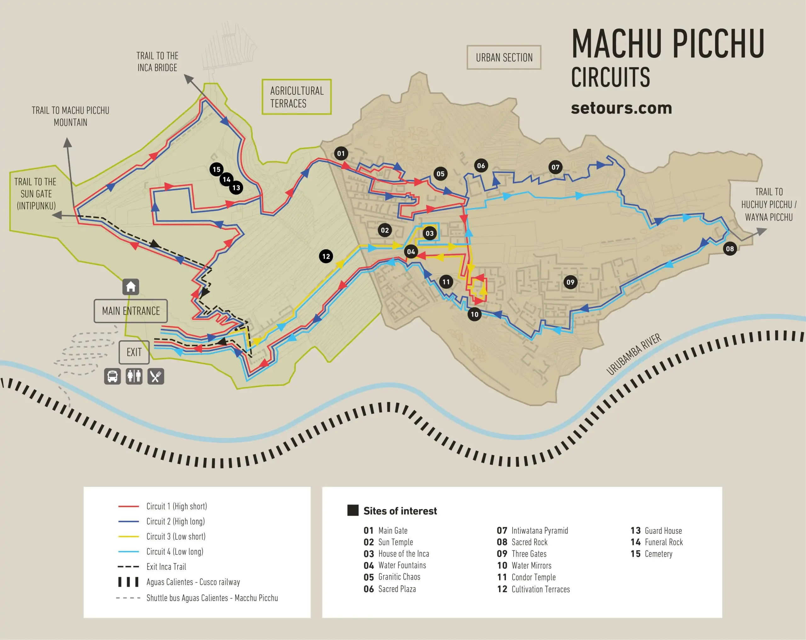

Machu Picchu, also spelled Machupijchu, site of ancient Inca ruins located about 50 miles (80 km) northwest of Cuzco, Peru, in the Cordillera de Vilcabamba of the Andes Mountains. It is perched above the Urubamba River valley in a narrow saddle between two sharp peaks—Machu Picchu (“Old Peak”) and Huayna Picchu (“New Peak”)—at an elevation of 7,710 feet (2,350 metres). One of the few major pre-Columbian ruins found nearly intact, Machu Picchu was designated a UNESCO World Heritage site in 1983.
The Temples of Machu Picchu:
- The temple of Sun
- The Temple of the Moon
- The Temple of the Condor
- The Main Temple or “Wayrana”
- The Temple of the Three Windows
- The Intihuatana
Animals are suspected to have migrated to Machu Picchu, as there were several bones found that were not native to the area. Those are:
- Lamas
- Alpacas
- Guinea pigs
Machu Picchu map and routes:
Machu Picchu is a popular tourist attraction. Here are four routes that can be used locally.
| Routes | Difficulty | Description |
|---|---|---|
| Route 1, red | High start | This route leads from the entrance through the upper sector, over agricultural terraces, past the guard's house, through the main entrance to the urban sector, to the sun temple, and from there over the water mirrors in the lower sector back to the exit. |
| Route 2, dark blue | High long | This is the most comprehensive route and is the most complete exploration of the citadel. The route leads from the entrance through the upper sector, over agricultural terraces, past the guard's house, through the main entrance into the urban sector, to the temple of the sun. From there it continues over the temple square and the Intiwatana Pyramid in the upper sector to the sacred rock in the rearmost part of the citadel, and then through the lower sector past the condor temple to the exit. |
| Route 3, yellow | Low short | This is the shortest of all routes and includes only a small, limited part of the citadel. The route leads over agricultural terraces directly into the lower sector, past the Temple of the Sun, to the house of the Inca, and from there over the water mirrors in the lower sector back to the exit. This route only requires you to navigate a few stairs and is particularly suitable for people with reduced mobility. |
| Route 4, turquoise | Low long | This route also only includes the lower sector, but leads to the rear area of the citadel. The route leads over agricultural terraces directly into the lower sector, past the Temple of the Sun, to the house of the Inca, and on to the sacred rock, and from there to the lower sector past the Condor Temple and back to the exit. |